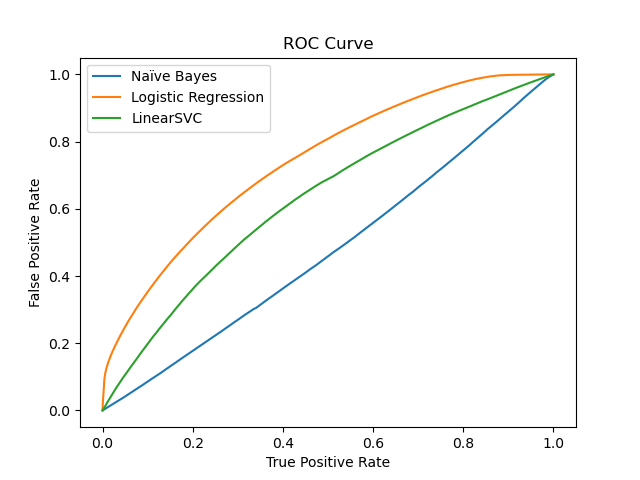

╒═════════════════════╤═══════════════╤═════════════════╤══════════════════╤═══════════════════════════╕
│ News Site │ No of Posts │ Average Score │ Total Comments │ No. of Posts in Top 100 │
╞═════════════════════╪═══════════════╪═════════════════╪══════════════════╪═══════════════════════════╡
│ reuters.com │ 10402 │ 1005.53 │ 941804 │ 2 │
│ theguardian.com │ 5302 │ 794.83 │ 367433 │ 3 │
│ bbc.com │ 3726 │ 406.33 │ 150686 │ 0 │
│ youtube.com │ 3268 │ 0.99 │ 1395 │ 0 │
│ youtu.be │ 3155 │ 0.99 │ 1478 │ 0 │
│ apnews.com │ 2776 │ 826.12 │ 196241 │ 2 │
│ aljazeera.com │ 2121 │ 410.58 │ 91511 │ 0 │
│ businessinsider.com │ 2107 │ 3815.61 │ 562551 │ 12 │
│ cnn.com │ 1944 │ 805.23 │ 155646 │ 3 │
│ pravda.com.ua │ 1702 │ 2857.63 │ 317834 │ 7 │
│ newsweek.com │ 1658 │ 2516.2 │ 369312 │ 4 │
│ bbc.co.uk │ 1637 │ 1032.32 │ 156512 │ 4 │
│ timesofisrael.com │ 1519 │ 1058.52 │ 143717 │ 5 │
│ twitter.com │ 1428 │ 1.06 │ 396 │ 0 │
│ edition.cnn.com │ 1412 │ 1022.95 │ 127421 │ 2 │
│ france24.com │ 1375 │ 784.59 │ 83869 │ 0 │
│ msn.com │ 1357 │ 1242.52 │ 182079 │ 2 │
│ dw.com │ 1225 │ 782.35 │ 76086 │ 0 │
│ nytimes.com │ 1224 │ 742.27 │ 74875 │ 1 │
│ news.sky.com │ 1176 │ 1711.02 │ 193815 │ 3 │
│ bloomberg.com │ 1119 │ 1021.3 │ 105288 │ 1 │
╘═════════════════════╧═══════════════╧═════════════════╧══════════════════╧═══════════════════════════╛Conclusion
This project aimed to analyze the comments and posts on the r/worldnews subreddit through natural language processing (NLP) and machine learning (ML) techniques. In our Exploratory Data Analysis (EDA), we identified what news sites were primarily shared on the subreddit, via aggregated submission counts; began seeing what stories were most popular, based on karma scores; found that the discussion threads were heavily tied to the Russia-Ukraine Conflict; and examined the distribution of comments and submissions over time. We noted that several of the shared sites were American in origin, but also saw that many of the popular sources came from several European countries, including Russia. Other social media sites were also a popular submission choice, especially YouTube. Using the ACLED data, we were also able to determine that while the conflict was receiving a large share of attention, not all of the events of the conflict were being shared equally. Additionally, the time series analysis saw that there were multiple gaps in the dataset for certain time periods.
Table 5.1 : Most Shared News Sites
In the NLP stage of our analysis, we chose to look closer at the topics and entities that the submissions were about, as well as examine the sentiment of both the comments and submissions. In our topic modelling we found that using the whole data resulted in groups with substantial amounts of overlap regarding the conflict. We then constrained the data to time periods that saw high amounts of search interest in Google Trends, creating two subsets which included posts and comments that occurred up to two weeks after the designated event’s date. The resulting subsetted data produced clearer topic groups, with specific events being highlighted, although the cluster of groups which were hard to differentiate remained. For the sentiment analysis at this stage, we used pretrained models from JohnSnowLabs to examine both the sentiment of the comments in the threads as well as comments and submission titles related to the Russia-Ukraine Conflict. Of the three different models used, Twitter and IMDB had identical results while the Vivek model registered a larger portion of the comments and submissions as neutral, but all three models indicated negative sentiment as the plurality of sentiments, if not the majority. The live threads’ results indicated strong sentiments, both positive and negative across the comments, a pattern which seemed to hold in the comments of submissions. The article titles, however, demonstrate much greater negativity according to the IMDB and Twitter models, while the Vivek model read it as again having more neutrality.
Table 5.2 : Pre-Trained Models Sentiment Results on Comments and Submissions
╒════════════════════════════╤════════════╤═══════════╤════════════╕
│ Model │ negative │ neutral │ positive │
╞════════════════════════════╪════════════╪═══════════╪════════════╡
│ IMDB Sentiment Analyzer │ 52.54% │ 4.32% │ 43.30% │
│ Twitter Sentiment Analyzer │ 52.54% │ 4.32% │ 43.30% │
│ Vivek Sentiment Analyzer │ 44.78% │ 18.91% │ 36.30% │
╘════════════════════════════╧════════════╧═══════════╧════════════╛Lastly, we have successfully designed and implemented predictive ML models to predict controversiality markers and the sentiment of comments and submissions. The controversiality model took in a TF-IDF weighted vector of the comments and was able to achieve a high level of predictive strength, although that seemed to be a result, in large part, due to the class imbalance. We believe that the deleted and removed comments were likely controversial, and so the remaining controversial ones were not being predicted as well as we would hope. For the sentiment model we decided to use Vader-Sentiment lexicon to label our data rather than relying exclusively on pretrained models. The dataset we used to classify sentiment appeared to label more similarly to the Vivek model, with the plurality being negative but showing a larger proportion of neutral material. Several ML algorithms were then used to train the labelled dataset and we ultimately saw great success with test error at slightly above 8%.
Figure 5.1 : ROC Curves for Different Predictive Models Used in Predicting Controversiality

Moving forward, we feel that we can further improve our models via the use of over and under sampling techniques to deal with the class imbalance. Additionally, we believe that we can improve on a predictive model for karma scores that we attempted, although at present its accuracy can be described only as pitiful.